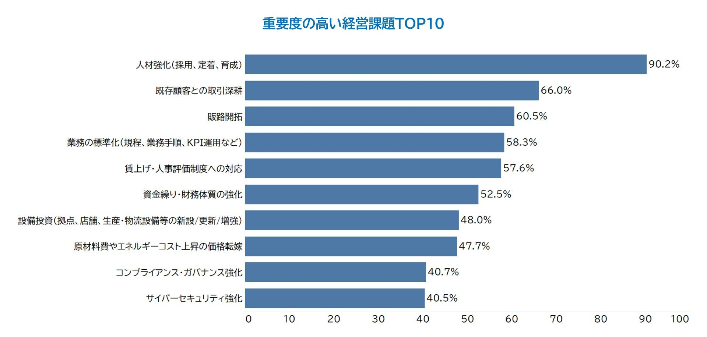
人材強化は重要度の高い経営課題
採用・定着・育成を中心に、企業の成長課題は人材と組織づくりに直結しています。
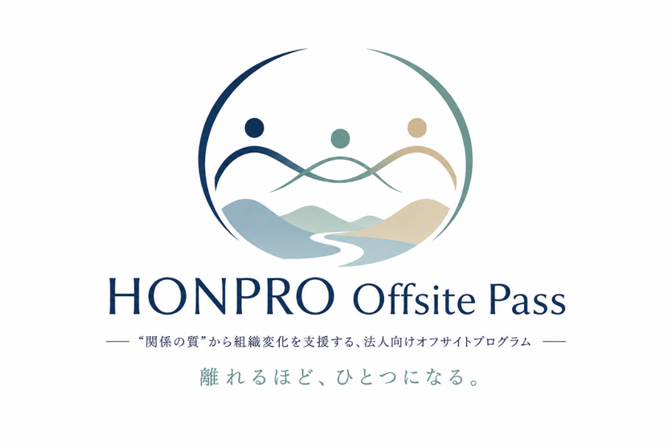
Corporate Offsite Program in Kyushu
HONPRO Offsite Passは、福岡・九州の地域資源と滞在環境を活用し、対話・体験・内省を通じて組織変化を支援する企業向けオフサイト研修プログラムです。
Why Offsite
採用・定着・育成、部署を越えたコミュニケーション、評価制度や組織文化の浸透。企業が抱える課題の多くは、制度や研修メニューだけで解決しきれない「人と組織」の課題です。
日常業務から物理的に離れ、役職や部署を越えて対話し、地域での体験を共有することで、普段は生まれにくい相互理解と前向きな変化を引き出します。
Background
事業環境が変化する中で、経営課題は採用・定着・育成、評価制度、組織文化、部署を越えたコミュニケーションへ広がっています。単発の座学や制度導入だけではなく、メンバー同士の関係性と行動を変える機会が求められています。

採用・定着・育成を中心に、企業の成長課題は人材と組織づくりに直結しています。
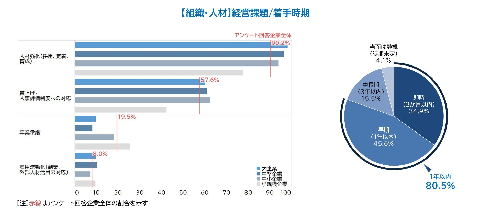
多くの企業が、組織づくりに関わる課題へ早期に着手する必要性を感じています。
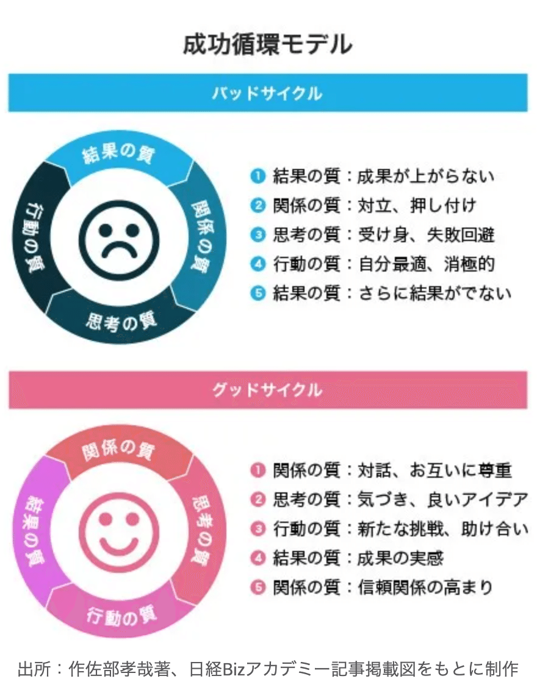
Relationship Quality
組織変化は、関係の質、思考の質、行動の質、結果の質が循環することで進みます。対話と体験を通じて関係性の質を高めることが、新たな挑戦や助け合いを生み、成果の実感へつながります。
Concept
HONPRO Offsite Passは、オフサイト研修の企画設計から、滞在拠点、地域体験、ワークショップ、実施後の振り返りまでを一体で設計します。
オフィスやオンライン会議から離れ、発想と関係性を切り替える環境を用意します。
フィールドワーク、SUP、農業体験、地域との対話などを目的に合わせて組み合わせます。
研修で得た気づきを言語化し、チームの行動、関係性、文化づくりへ接続します。
Program
組織課題のヒアリングをもとに、研修内容、ワークショップ、地域体験、滞在先、移動までを個別に設計します。
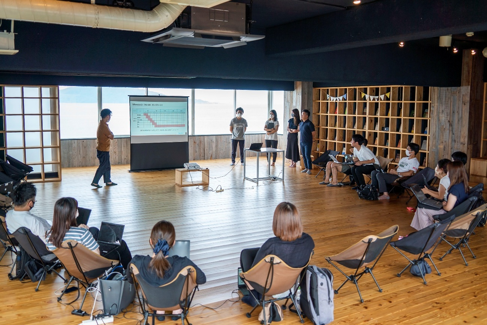
経営合宿、管理職研修、1on1、チームビルディングなど、目的に応じた対話の場を設計します。
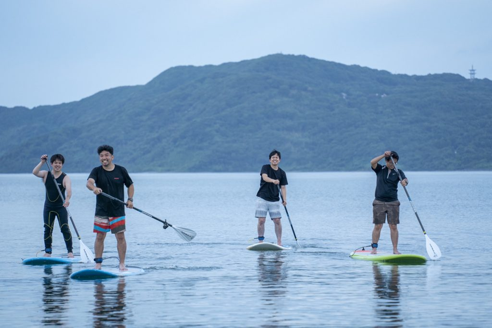
SUPや地域フィールドワークなど、普段とは違う環境で相互理解を深める体験を組み込みます。
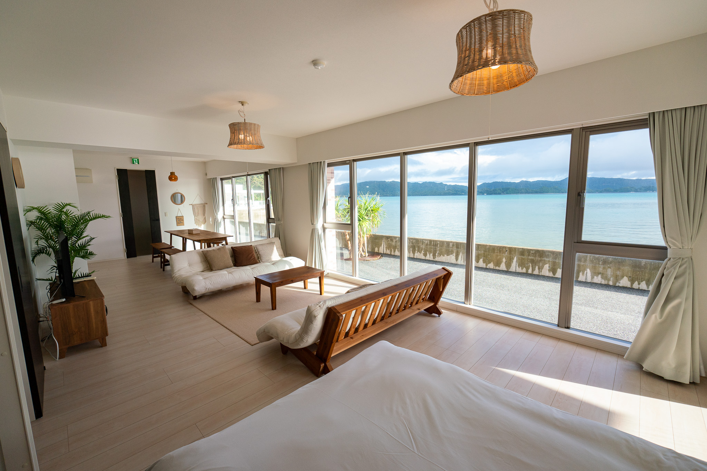
宿泊、ワークスペース、保養所利用、チーム合宿まで、実施目的に合わせた滞在環境を整えます。
Case Study
HONPRO Offsite Passでは、企業ごとの課題や目的に合わせて、対話、フィールドワーク、アクティビティ、ビジネス研修を組み合わせたプログラムを設計してきました。
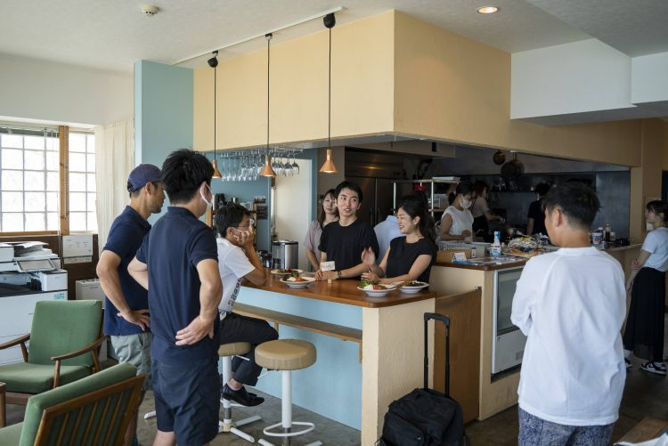
参加者の声: 「日常から距離を置くことで、普段話せないことまで踏み込んで話すことができた」
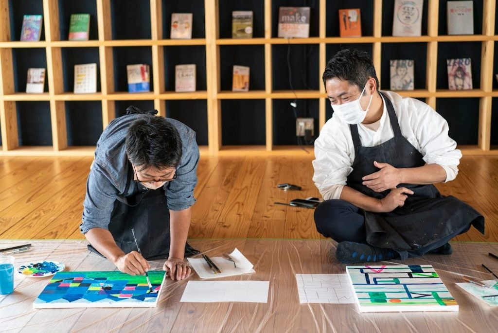
参加者の声: 「普段は見えにくいメンバーの考えを知ることができ、チーム理解が深まった」
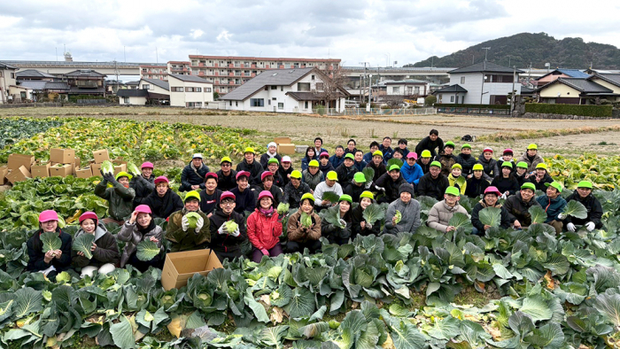
参加者の声: 「“育てる”というテーマを、頭だけでなく体験として理解できた」
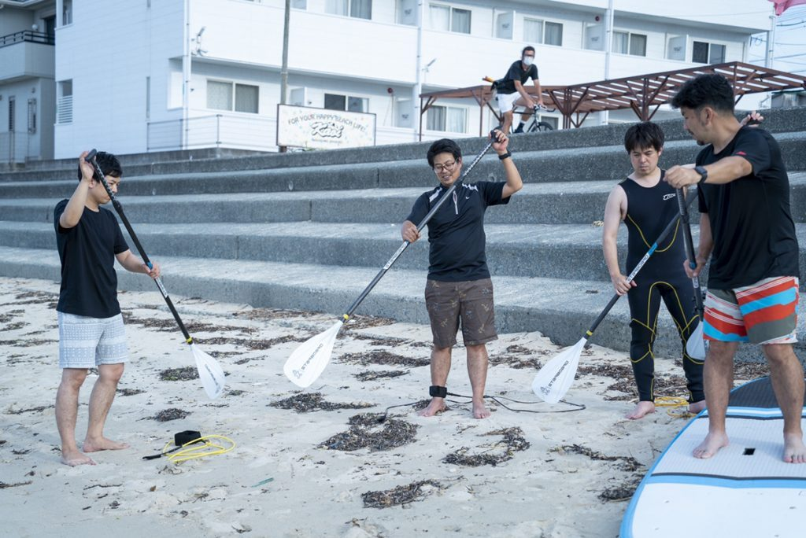
参加者の声: 「場所を共有することで、心の距離がスムーズに近づいた」「話の内容だけでなく、“どこで話すか”も重要だと実感した」
Base
福岡・今宿エリアのシェアオフィス、コミュニティスペース。コワーキング、貸切・イベント利用、ワーケーション・企業合宿、宿泊利用に対応します。
SALT公式サイトを見る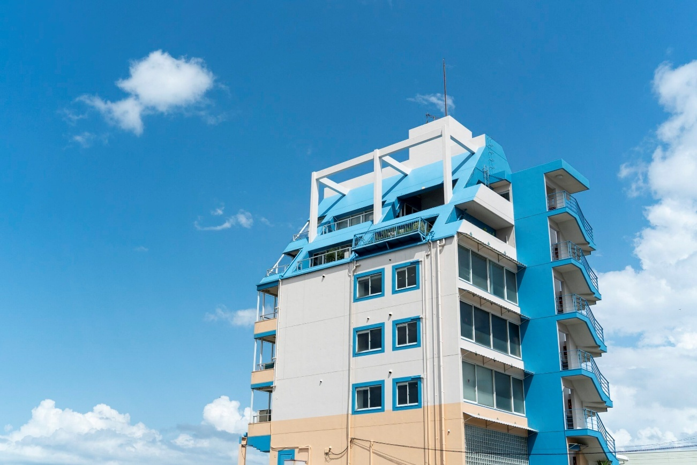
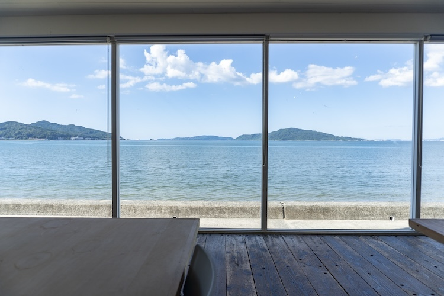
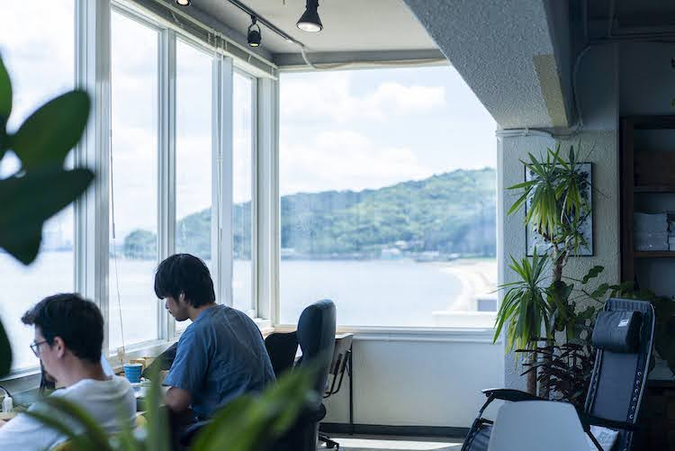
沖縄・屋我地島の滞在施設。オフサイトミーティング、合宿、社員研修、ワークショップ、自然体験・アクティビティに活用できます。
STYDE YAGAJI公式サイトを見る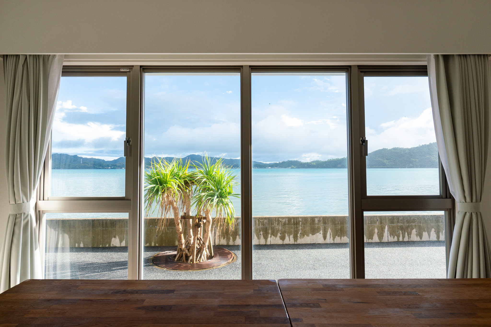
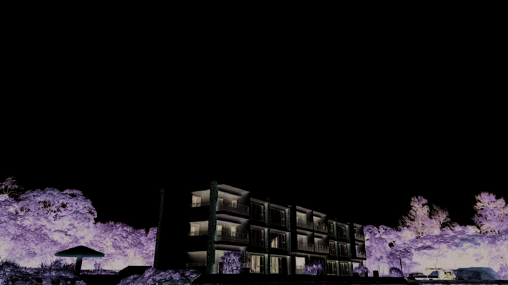
Use Case
経営陣やマネージャーの目線を合わせ、次の行動へつなげる場を設計します。
部署や役職を越えた対話を促し、関係性の再構築を支援します。
現場を動かすリーダーの内省、相互理解、行動変化を後押しします。
言葉だけで終わらせず、体験と対話を通じて自分ごと化します。
新入社員や若手メンバーが組織理解を深める機会をつくります。
制度導入だけでなく、使われる仕組みと体験設計まで支援します。
Plan
企業ごとの課題や実施人数に合わせて、個別にご提案します。
小規模チームの合宿や試験導入に。
四半期ごとの組織開発に。
全社施策や継続的な組織変化に。
Flow
組織課題、目的、人数、希望時期、実施場所の条件を確認します。
研修テーマ、滞在場所、体験内容、当日の進行を設計します。
会場、宿泊、地域体験、ファシリテーションを支援します。
得られた気づきを整理し、現場での行動につなげます。
経営合宿、チームビルディング、管理職研修、ワーケーション導入など、目的に応じて最適なプログラムをご提案します。
assets/... をメディアライブラリの画像URLに差し替えてください。問い合わせボタンは /contact/?type=company&from=offsite-pass-lp にしています。会社概要は本文に組み込まず、必要に応じて /company/ への別リンクで設置してください。